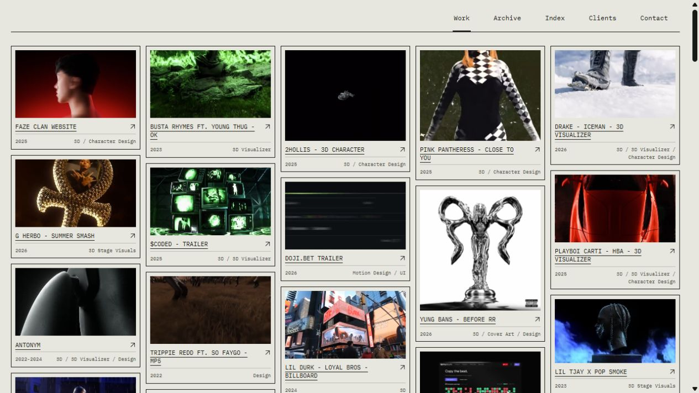
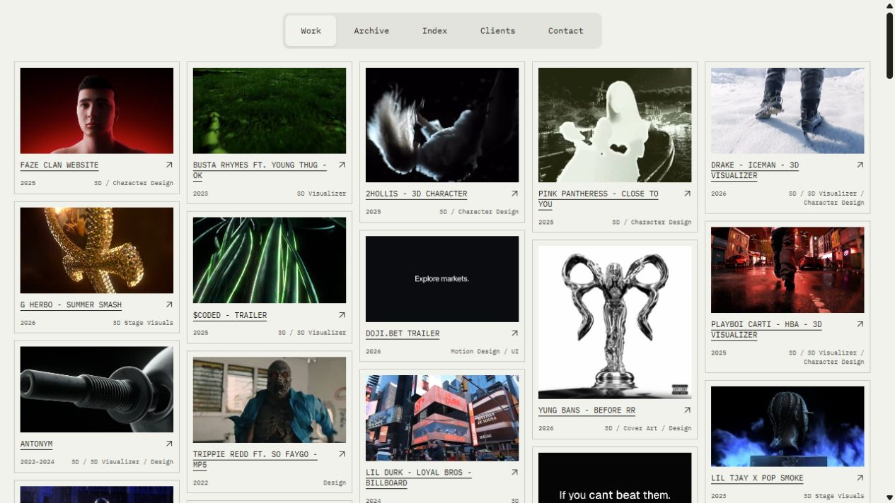
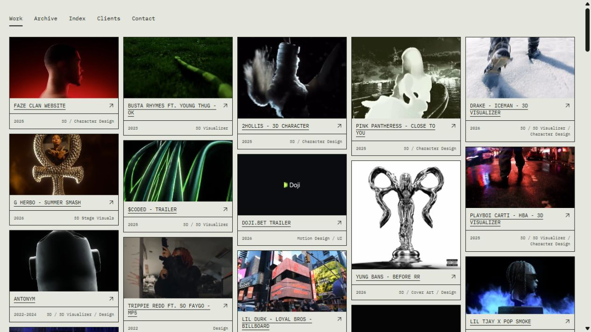
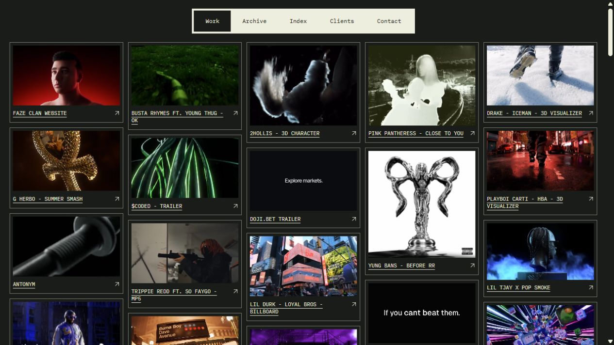
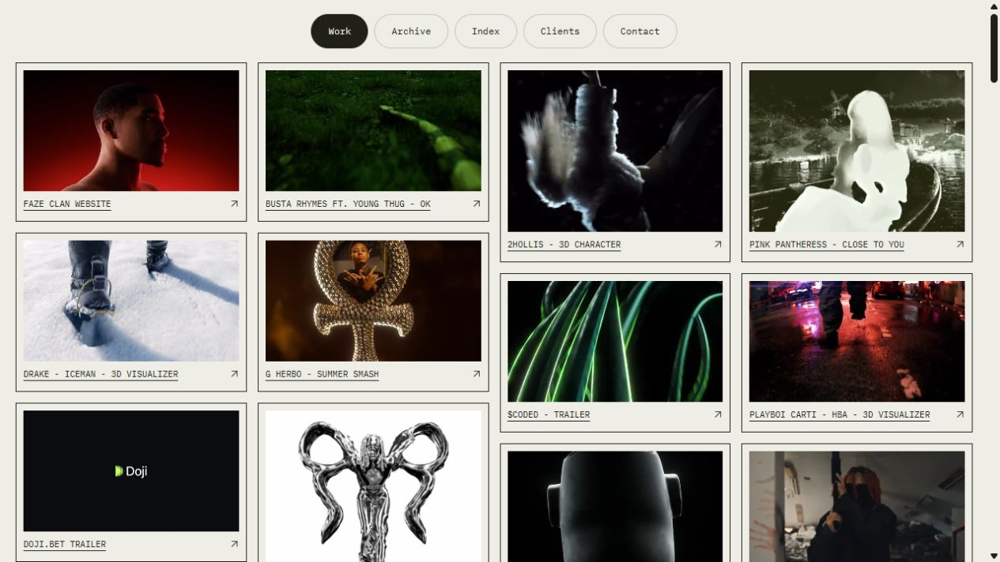
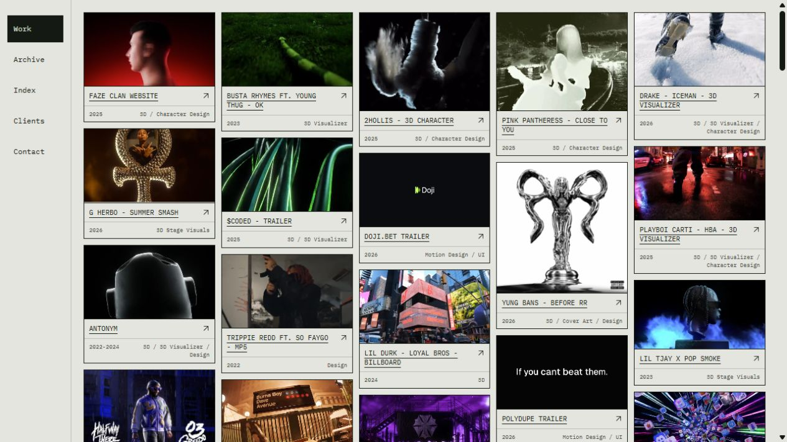
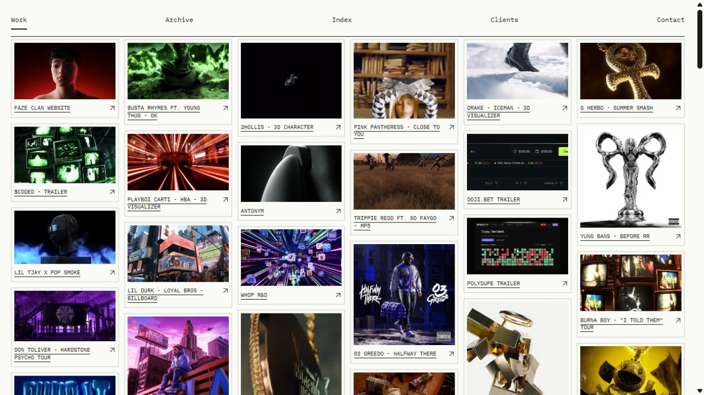
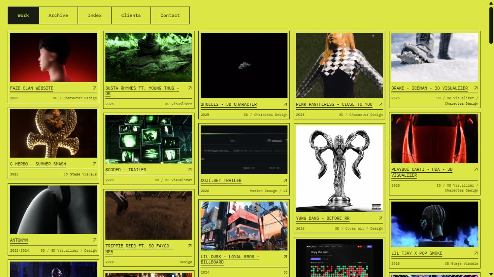
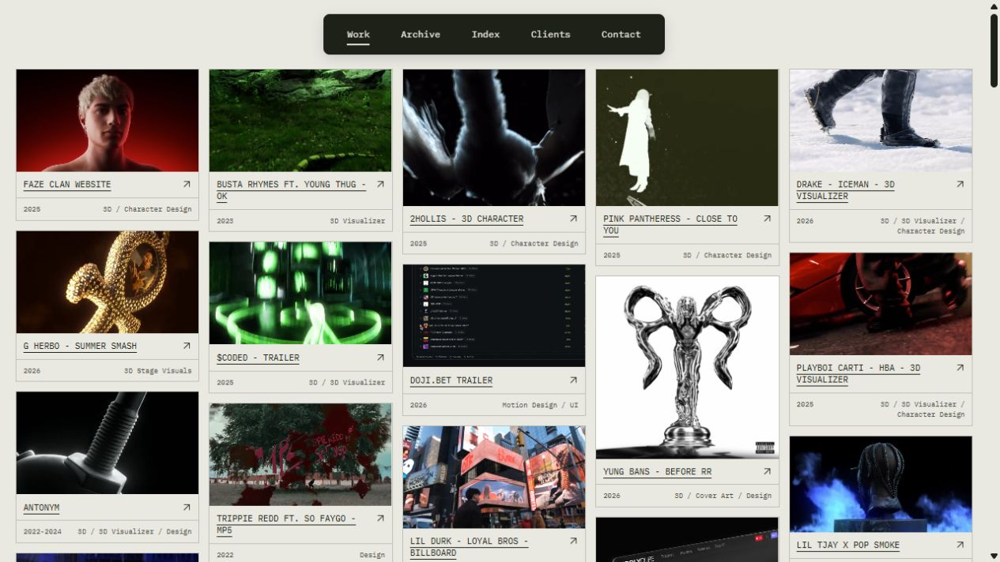
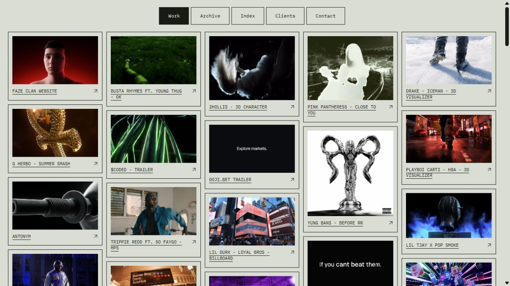

Ink / OriginalInk / Original
01 / 10Original-style bento, fine project frames and a quiet full-width navigation rail.

Soft BarSoft Bar
02 / 10A soft segmented bar above individually framed work.

Fine TabsFine Tabs
03 / 10Underlined tabs and restrained caption bands.

Dark FrameDark Frame
04 / 10Dark project frames with a clean pale navigation strip.

Quiet PillsQuiet Pills
05 / 10Small separate pills and a four-column moving archive.

Margin RailMargin Rail
06 / 10A vertical navigation rail beside the original bento rhythm.

White IndexWhite Index
07 / 10Six compact columns and a simple ruled navigation line.

Acid LedgerAcid Ledger
08 / 10Acid paper, black frames and a compact ledger-like bar.

Floating StripFloating Strip
09 / 10A single floating navigation strip over a dense moving bento.

Square SetSquare Set
10 / 10Squared controls with precise inset project boxes.